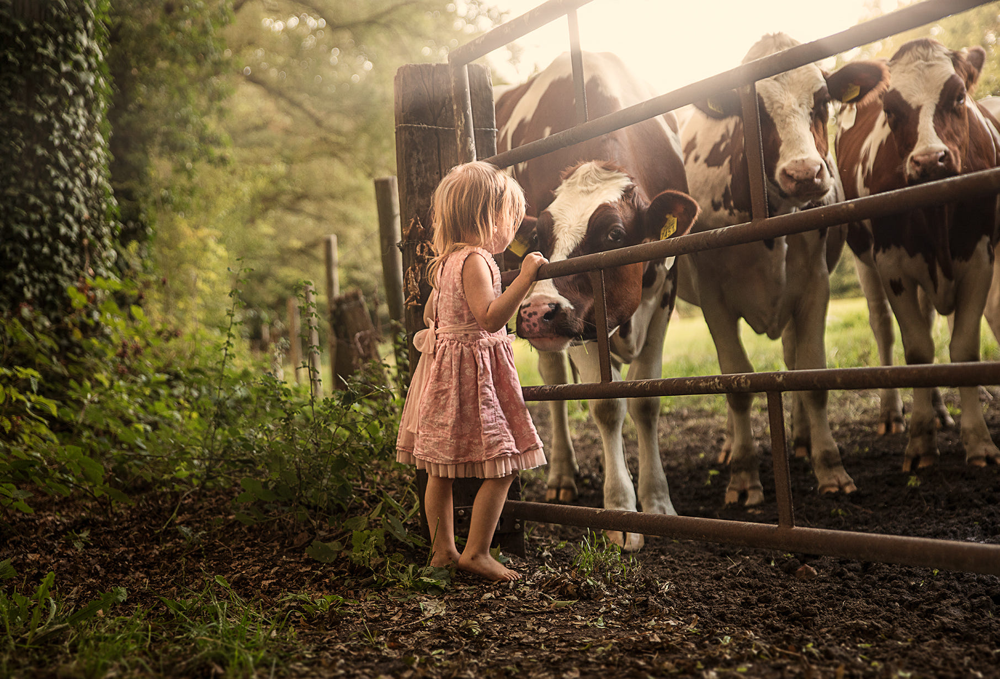
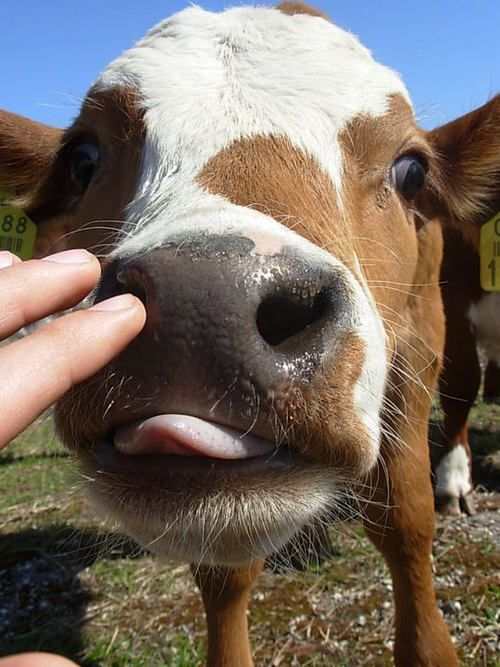
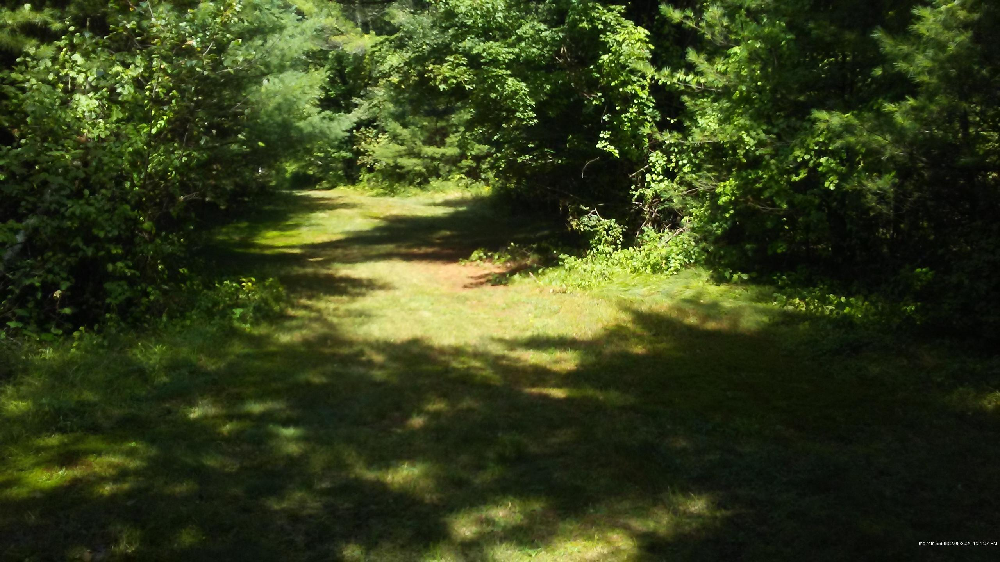
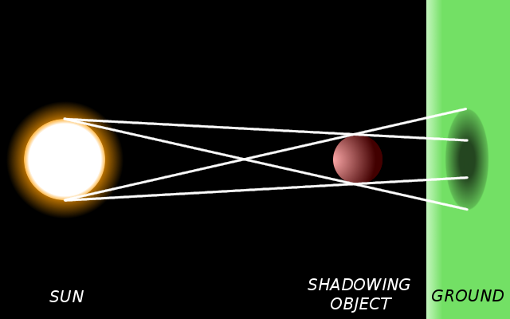
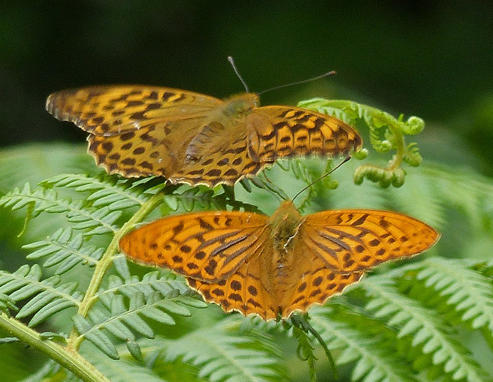
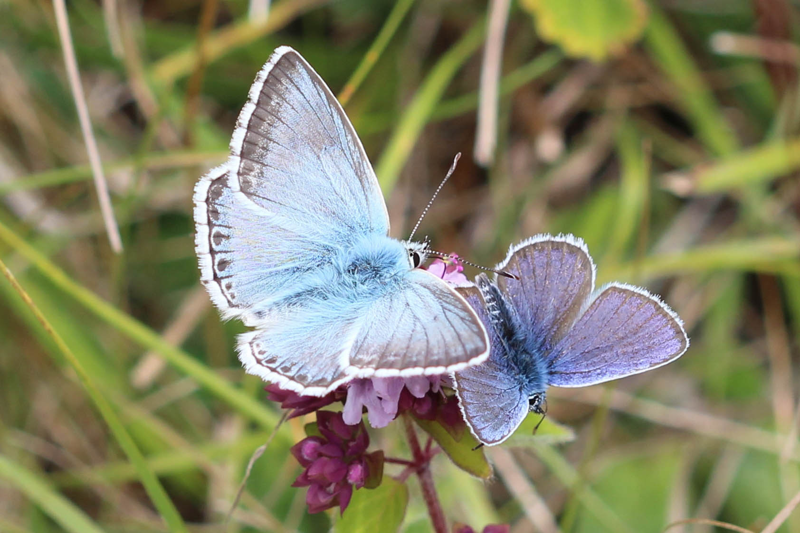
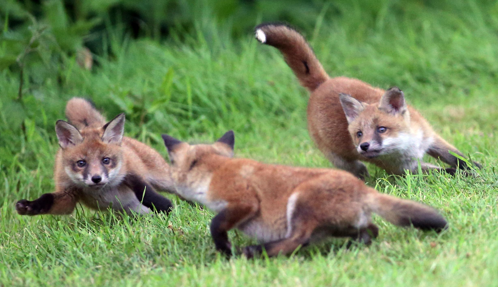
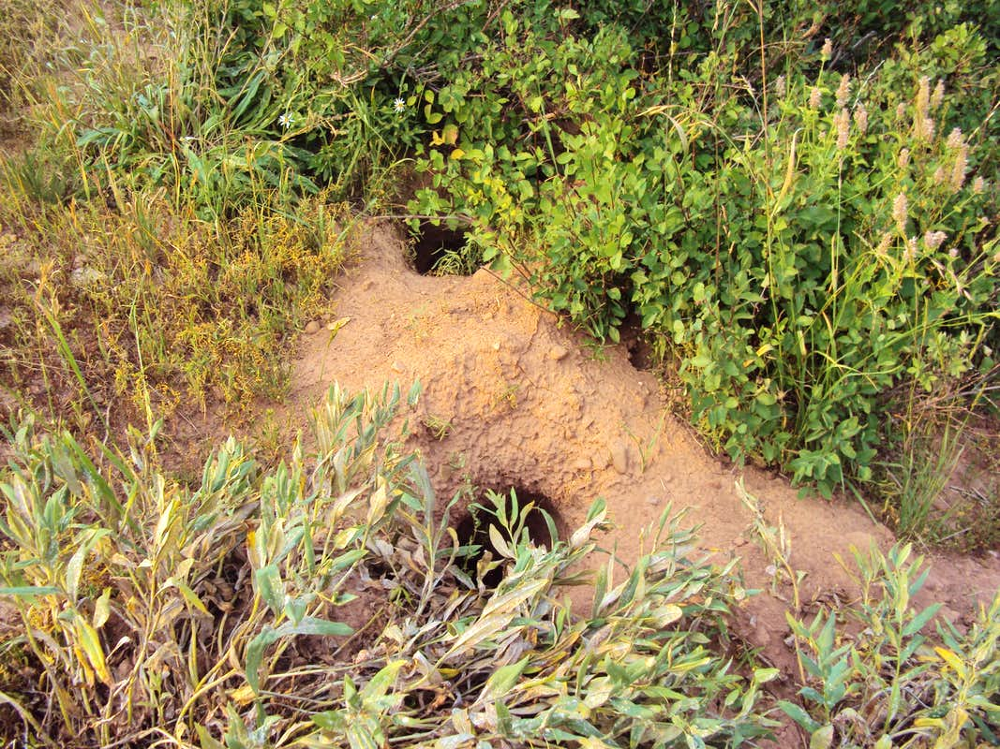

Sarah likes the forest. She likes to walk on the path under the tall trees. She likes to watch the butterflies dancing in the sunshine, and to listen to the birds singing. She knows the songs of many birds, and she knows their names. Her mother knows the names of all the birds and all the butterflies. Sarah is happiest when she is walking in the forest with her mother and talking with her.
The forest is near her house. It is summer now, and Sarah does not have to go to school, because of the school holidays. Her mother works during the day, so Sarah is alone from 8 in the morning until 8 at night. Every day after breakfast (except on days when it is raining) she makes sandwiches and puts them in a bag. She puts water in a bottle and puts the bottle in the bag, too. Then she goes outside, locks the front door, and goes walking in the forest.
Today the weather is warm, so she has not put on a coat. She is wearing a pink summer dress with a pattern of flowers on it. She likes to wear sandals on her feet, so that her feet can stay cool.

She crosses the road and climbs through a fence into a field. She walks across the field towards the forest. There are cows in the field. They know her. They see her cross the field every day. When they see her climb through th e fence, they come to meet her. They walk slowly, swishing their tails. They come close to her. She can feel the warmth of their bodies around her. Sarah stops to talk to the cows. She holds her hands out to them, so that she can feel the warmth of their breath on her fingers. They have big nostrils, big eyes and big tongues. They are much bigger than her, but she is not afraid of them.

And then it is time to go on. She starts to walk forwards, and the cows in front of her move backwards, to give her space. The cows are behind her now, and she turns to wave at them before she goes into the forest. She waves at them every day, but she does not know if they understand what she means when she waves her hand.

In the forest, the sunlight creates shadows on the ground. Above her head are trees: branches and leaves, waving in the soft wind. Below her feet is the path, and the shadows of the branches and leaves. The shadows move because the branches move. She can see her own shadow, too. Her shadow is dark and the edges of her shadow are sharp. The shadows of the leaves and branches are blurred and they are not as dark as her own shadow.

Once, when she was walking with her mother, she asked, "Why is my shadow different from the shadows of the trees?" Her mother told her that the sun is far, far away and very, very big. The sun is bigger than a leaf, bigger than Sarah, bigger than the whole world.
She showed Sarah that if she holds a leaf near the ground, the leaf's shadow is dark and its edges are sharp. When she held the leaf high in the air, its shadow became lighter, and its edges became blurred. She told Sarah not to look at the sun, because the light from the sun will hurt her eyes.
In the forest now, there are many big orange butterflies. They fly with her along the path, just over her head. When they meet, they begin to dance. Sometimes the dance lasts a long time. One butterfly flies in a straight line, and the other flies round and round, and then they leave the sunny path and fly into the shadows.

There are little blue butterflies, too. They fly around her feet, many of them all together. She stops to count them: ten, eleven, twelve, thirteen, fourteen... But they are moving all the time. She cannot tell how many there are.

Sarah is happy. The weather is warm, a soft wind is blowing. The forest is quiet, except for the birds singing. She cannot hear any cars, or any people. She feels safe.
And then there is a little noise. An animal's voice. It's not a big animal. It's not a dog. It's not a cat. Ah! There are two voices. No, three! Sarah stops to listen. There is something orange or brown in the shadows. Little animals, playing. Foxes! Three little fox cubs. They are running and jumping. They are rolling on the ground together. They are making little noises. Perhaps the noises are like laughter. Perhaps the little fox cubs are laughing as they play.

Sarah wants to see them better. She wants to go closer to them. She licks her finger and holds it up. She wants to know which way the wind is blowing. She knows that the foxes can smell very well. She does not want the foxes to smell her. It's ok. The wind is blowing her smell away from the foxes. She moves off the path, very slowly. She finds a good place to sit, close to the fox cubs. She watches the foxes playing together for a long time.
Then their mother comes, and the cubs follow her. Sarah follows, too. She is very quiet. She wants to see where they go. She is careful not to be close to them, she is careful to watch where they are going. And then suddenly they disappear, into the ground. Sarah moves closer. She wants to see the hole where the foxes live. She wants to be able to find them again. She wants to come back here.

She looks carefully at the hole where the foxes live. Then she goes back the way she came, back to the path where the little blue butterflies were dancing. But she makes a mistake. She goes the wrong way. She cannot find the path. She cannot remember where to go.
Sarah is not afraid. The forest is quiet. It is not dangerous. She finds a comfortable place to sit, and eats her sandwiches. She looks around her as she is eating, thinking. She cannot hear any cars, or any voices. She can only hear birds. In the town, there would be many little birds wanting to eat her sandwiches, and also big pigeons. The birds in the forest are hungry too, but they do not ask her to give them food.
She drinks her water and gets up. Now she must decide where to go.